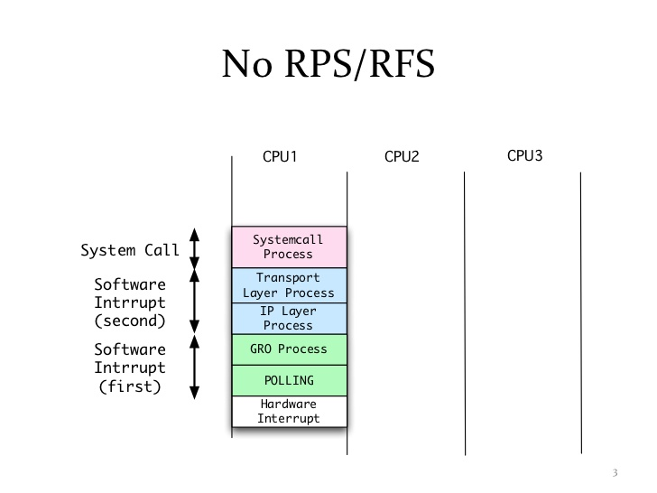
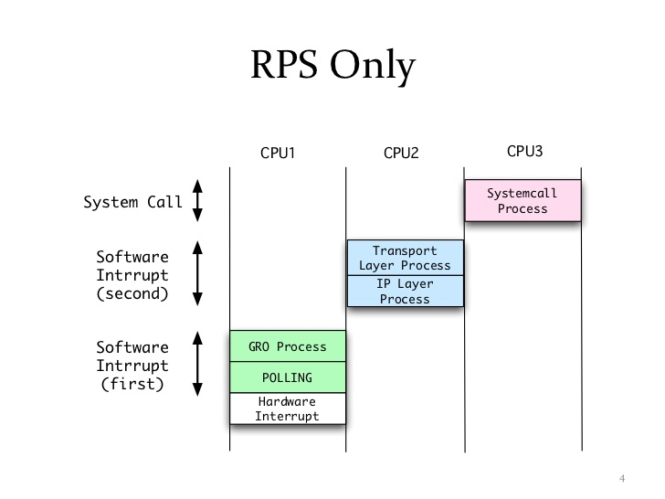
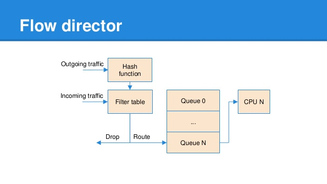
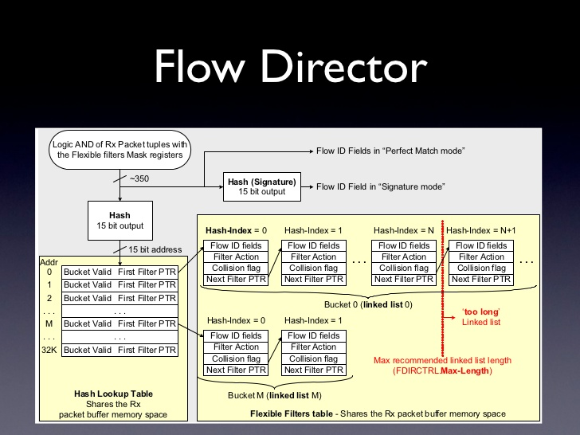

网卡多队列
网卡多队列，顾名思义，也就是传统网卡的DMA队列有多个，网卡有基于多个DMA队列的分配机制。多队列网卡已经是当前高速率网卡的主流。
RPS


图片来源RPS/RFS
Linux内核中，RPS（Receive Packet Steering）在接收端提供了这样的机制。RPS主要是把软中断的负载均衡到CPU的各个core上，网卡驱动对每个流生成一个hash标识，这个hash值可以通过四元组（源IP地址SIP，源四层端口SPORT，目的IP地址DIP，目的四层端口DPORT）来计算，然后由中断处理的地方根据这个hash标识分配到相应的core上去，这样就可以比较充分地发挥多核的能力了。

DPDK多队列支持
DPDK Packet I/O机制具有与生俱来的多队列支持功能，可以根据不同的平台或者需求，选择需要使用的队列数目，并可以很方便地使用队列，指定队列发送或接收报文。由于这样的特性，可以很容易实现CPU核、缓存与网卡队列之间的亲和性，从而达到很好的性能。从DPDK的典型应用l3fwd可以看出，在某个核上运行的程序从指定的队列上接收，往指定的队列上发送，可以达到很高的cache命中率，效率也就会高。
除了方便地做到对指定队列进行收发包操作外，DPDK的队列管理机制还可以避免多核处理器中的多个收发进程采用自旋锁产生的不必要等待。
以run to completion模型为例，可以从核、内存与网卡队列之间的关系来理解DPDK是如何利用网卡多队列技术带来性能的提升。
- 将网卡的某个接收队列分配给某个核，从该队列中收到的所有报文都应当在该指定的核上处理结束。
- 从核对应的本地存储中分配内存池，接收报文和对应的报文描述符都位于该内存池。
- 为每个核分配一个单独的发送队列，发送报文和对应的报文描述符都位于该核和发送队列对应的本地内存池中。
可以看出不同的核，操作的是不同的队列，从而避免了多个线程同时访问一个队列带来的锁的开销。但是，如果逻辑核的数目大于每个接口上所含的发送队列的数目，那么就需要有机制将队列分配给这些核。不论采用何种策略，都需要引入锁来保护这些队列的数据。
网卡是如何将网络中的报文分发到不同的队列呢？常用的方法有微软提出的RSS与英特尔提出的Flow Director技术，前者是根据哈希值希望均匀地将包分发到多个队列中。后者是基于查找的精确匹配，将包分发到指定的队列中。此外，网卡还可以根据优先级分配队列提供对QoS的支持。
流分类
高级的网卡设备（比如Intel XL710）可以分析出包的类型，包的类型会携带在接收描述符中，应用程序可以根据描述符快速地确定包是哪种类型的包。DPDK的Mbuf结构中含有相应的字段来表示网卡分析出的包的类型。
RSS（Receive-Side Scaling，接收方扩展）
RSS就是根据关键字通过哈希函数计算出哈希值，再由哈希值确定队列。

关键字是如何确定的呢？

哈希函数一般选取微软托普利兹算法（Microsoft Toeplitz Based Hash）或者对称哈希。
Flow Director

Flow Director技术是Intel公司提出的根据包的字段精确匹配，将其分配到某个特定队列的技术：网卡上存储了一个Flow Director的表，表的大小受硬件资源限制，它记录了需要匹配字段的关键字及匹配后的动作；驱动负责操作这张表，包括初始化、增加表项、删除表项；网卡从线上收到数据包后根据关键字查Flow Director的这张表，匹配后按照表项中的动作处理，可以是分配队列、丢弃等。

相比RSS的负载分担功能，它更加强调特定性。比如，用户可以为某几个特定的TCP对话（S-IP+D-IP+S-Port+D-Port）预留某个队列，那么处理这些TCP对话的应用就可以只关心这个特定的队列，从而省去了CPU过滤数据包的开销，并且可以提高cache的命中率。

服务质量
多队列应用于服务质量（QoS）流量类别：把发送队列分配给不同的流量类别，可以让网卡在发送侧做调度；把收包队列分配给不同的流量类别，可以做到基于流的限速。

流过滤
来自外部的数据包哪些是本地的、可以被接收的，哪些是不可以被接收的？可以被接收的数据包会被网卡送到主机或者网卡内置的管理控制器，其过滤主要集中在以太网的二层功能，包括VLAN及MAC过滤。

应用
针对Intel®XL710网卡，PF使用i40e Linux Kernel驱动，VF使用DPDK i40e PMD驱动。使用Linux的Ethtool工具，可以完成配置操作cloud filter，将大量的数据包直接分配到VF的队列中，交由运行在VF上的虚机应用来直接处理。
echo 1 > /sys/bus/pci/devices/0000:02:00.0/sriov_numvfs
modprobe pci-stub
echo "8086 154c" > /sys/bus/pci/drivers/pci-stub/new_id
echo 0000:02:02.0 > /sys/bus/pci/devices/0000:2:02.0/driver/unbind
echo 0000:02:02.0 > /sys/bus/pci/drivers/pci-stub/bind
qemu-system-x86_64 -name vm0 -enable-kvm -cpu host -m 2048 -smp 4 -drive file=dpdk-vm0.img -vnc :4 -device pci-assign,host=02:02.0
ethtool -N ethx flow-type ip4 dst-ip 2.2.2.2 user-def 0xffffffff00000000 action 2 loc 1